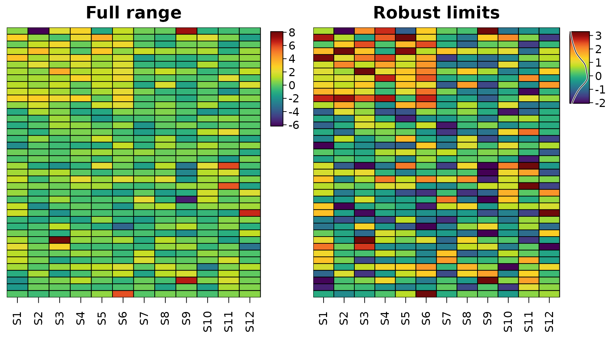
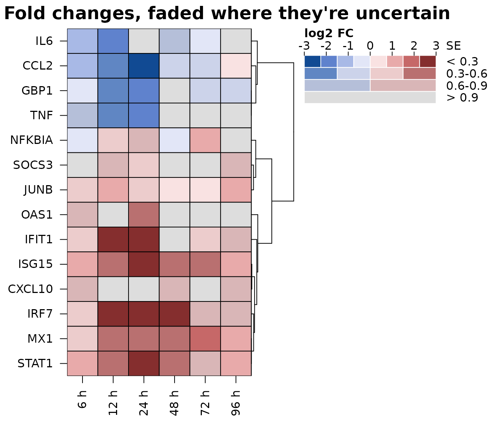
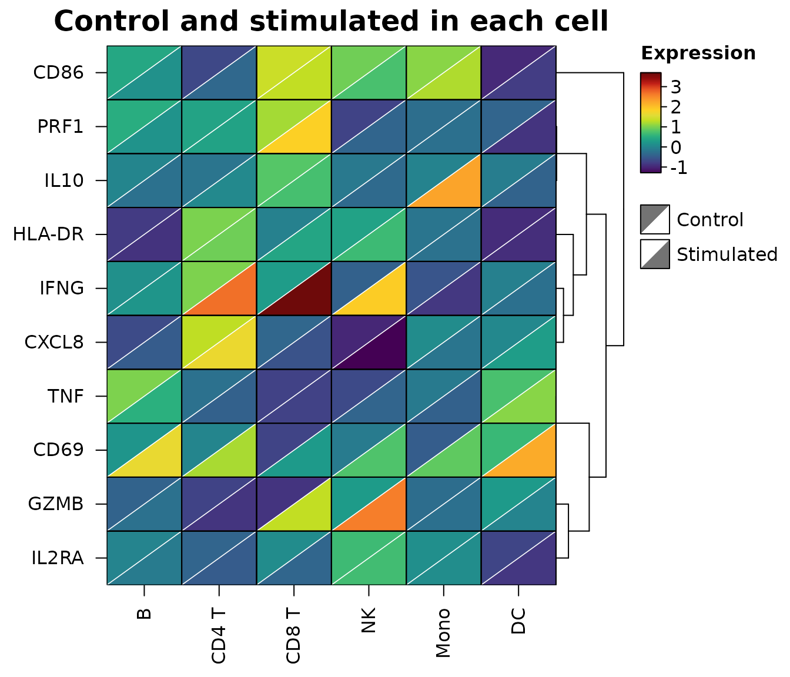
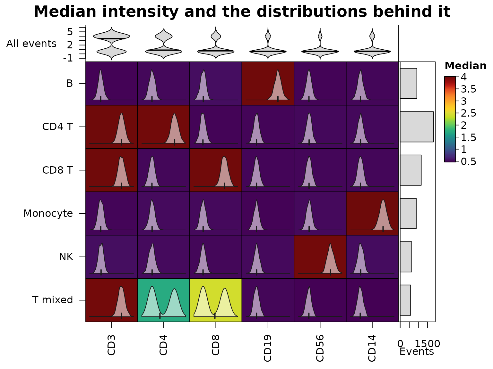
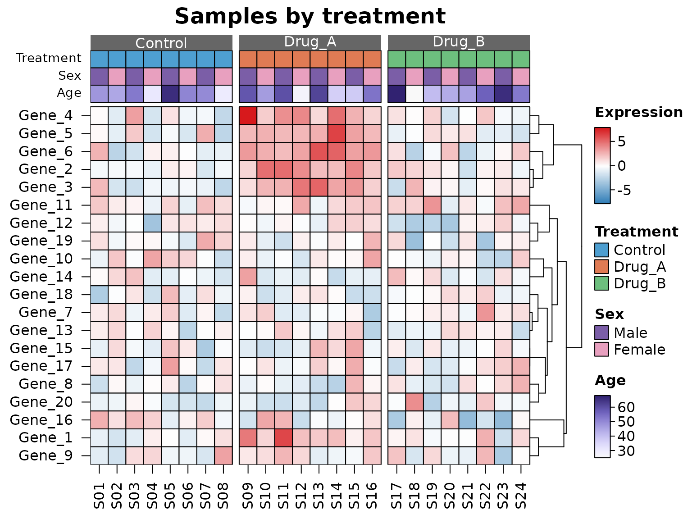
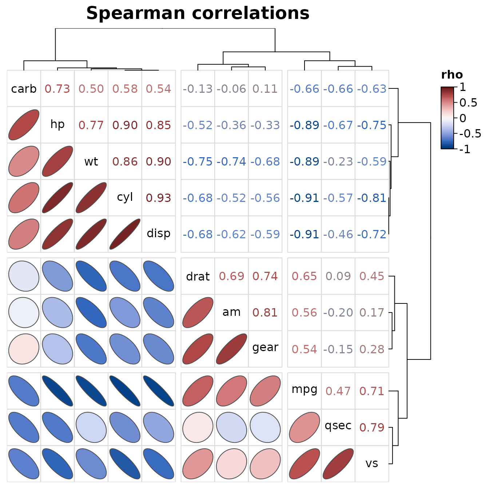

A heatmap shows one number per cell as a colour. Often the number isn’t the whole story: it has an uncertainty, it summarises a distribution, it is one of two conditions, or it belongs to samples with metadata. This article shows how HeatmapR puts that information into the heatmap rather than into separate plots.
Colour scales that don’t mislead
A colour scale stretched to cover a few extreme values leaves most
cells in the middle colours.
cell_col_scale_limits = "robust" sets the limits to the 2nd
and 98th percentiles of the data, so the values beyond them take the end
colours, and legend_col_density = TRUE draws the
distribution of the values over the colour legend, which shows how many
cells take each colour and how many sit beyond the limits.
set.seed(5)
expr <- matrix(rnorm(40 * 12), 40,
dimnames = list(paste0("Gene_", 1:40), paste0("S", 1:12)))
expr[1:12, 1:6] <- expr[1:12, 1:6] + 1.5
expr[sample(length(expr), 9)] <- c(6.5, 7.2, 5.8, 8.1, 6, -5.5, -6.2, 6.8, 5.9)
heat_map_custom(popup = FALSE, layout = c(1, 2))
heat_map(expr, axis_text_y = NA, title = "Full range")
heat_map(expr, axis_text_y = NA,
cell_col_scale_limits = "robust", legend_col_density = TRUE,
title = "Robust limits")
Diverging data such as fold changes or z-scores need a diverging
scale centred where the data change sign
(cell_col_scale_center = 0), and stepped scales
(cell_col_scale_breaks) make it easy to read off a
value.
Uncertainty
A fold change of 2 measured precisely and a fold change of 2 with a
standard error of 3 look the same in an ordinary heatmap.
cell_uncertainty takes a matrix of uncertainties (standard
errors, interval widths or p-values) and colours the cells with a
value-suppressing uncertainty palette (Correll, Moritz and Heer, 2018):
the more uncertain a value, the fewer colours its part of the scale has
and the closer they are to grey. Precise values use eight colours across
the scale, then four, two, and the most uncertain a single, nearly grey
colour, so a noisy estimate can’t look like a strong one.
cell_uncertainty_breaks sets the thresholds between the
levels, and the colour legend becomes a key with one row per level.
set.seed(3)
genes <- c("IFIT1", "ISG15", "MX1", "OAS1", "IRF7", "STAT1", "CXCL10",
"GBP1", "IL6", "TNF", "CCL2", "NFKBIA", "SOCS3", "JUNB")
times <- c("6 h", "12 h", "24 h", "48 h", "72 h", "96 h")
lfc <- outer(c(rep(2.4, 7), rep(-1.6, 4), rep(0.6, 3)),
c(0.5, 1, 1.2, 1, 0.7, 0.4)) + matrix(rnorm(84, 0, 0.5), 14)
se <- matrix(rgamma(84, 2, 6), 14) *
rep(c(1, 1, 1, 3, 1, 1, 4, 1, 2.5, 3.5, 1, 1, 5, 1), 6)
dimnames(lfc) <- dimnames(se) <- list(genes, times)
heat_map(
lfc,
tree_y = TRUE,
cell_col_scale = "Blue-Red 3",
cell_col_scale_limits = c(-3, 3),
cell_uncertainty = se,
cell_uncertainty_breaks = c(0.3, 0.6, 0.9),
cell_uncertainty_title = "SE",
legend_title = "log2 FC",
title = "Fold changes, faded where they're uncertain"
)
Two values in each cell
To compare two conditions cell by cell, cell_split takes
a second matrix with the same dimensions as the data. Each cell is split
along its diagonal: x fills the upper left half and
cell_split the lower right half, on one colour scale
covering both. Changes show up as cells with two colours, without
doubling the size of the heatmap.
set.seed(6)
types <- c("B", "CD4 T", "CD8 T", "NK", "Mono", "DC")
genes <- c("IFNG", "GZMB", "PRF1", "TNF", "IL2RA", "CD69", "HLA-DR",
"CD86", "IL10", "CXCL8")
control <- matrix(rnorm(60, 0, 0.6), 10, dimnames = list(genes, types))
stimulated <- control + matrix(rnorm(60, 0, 0.3), 10)
stimulated["IFNG", c("CD4 T", "CD8 T", "NK")] <-
stimulated["IFNG", c("CD4 T", "CD8 T", "NK")] + c(1.8, 2.6, 2.9)
stimulated["GZMB", c("CD8 T", "NK")] <- stimulated["GZMB", c("CD8 T", "NK")] + 2.2
stimulated["CD69", ] <- stimulated["CD69", ] + 1.4
stimulated["IL10", "Mono"] <- stimulated["IL10", "Mono"] + 2.4
heat_map(
control,
cell_split = stimulated,
cell_split_labels = c("Control", "Stimulated"),
tree_y = TRUE,
legend_title = "Expression",
title = "Control and stimulated in each cell"
)
Distributions behind summaries
Heatmaps of cluster medians are the standard summary of cytometry data, but a median can hide two populations. The cytometry events below have six markers; half of the “T mixed” cluster is CD4+ and the other half CD8+.
set.seed(8)
markers <- c("CD3", "CD4", "CD8", "CD19", "CD56", "CD14")
pops <- list("CD4 T" = c("CD3", "CD4"), "CD8 T" = c("CD3", "CD8"),
"T mixed" = "CD3", "B" = "CD19", "NK" = "CD56",
"Monocyte" = "CD14")
cluster <- sample(names(pops), 6000, replace = TRUE,
prob = c(3, 2, 1, 1.5, 1, 1.5))
events <- matrix(rnorm(6000 * 6, 0.5, 0.45), ncol = 6,
dimnames = list(NULL, markers))
for(p in names(pops)) {
ind <- cluster == p
events[ind, pops[[p]]] <- rnorm(sum(ind) * length(pops[[p]]), 4, 0.55)
}
mixed <- which(cluster == "T mixed")
half <- mixed[seq_along(mixed) %% 2 == 0]
events[half, "CD4"] <- rnorm(length(half), 4, 0.55)
events[setdiff(mixed, half), "CD8"] <- rnorm(length(mixed) - length(half), 4, 0.55)
medians <- heat_map_summarise(events, group_y = cluster, fun = "median")cell_values draws the distribution behind each cell
inside it: a density with a tick at the median (or a histogram or box
plot with cell_glyph), on a range shared down each column.
The middling CD4 and CD8 medians of “T mixed” turn out to be two peaks.
bar_values_y adds the size of each cluster beside the rows,
and bar_type_x = "violin" the distribution of each marker
over all events above the columns.
heat_map(
medians,
cell_values = heat_map_summarise(events, group_y = cluster, fun = "values"),
bar_values_y = table(cluster),
bar_fill_y = "grey85",
bar_axis_label_y = "Events",
bar_values_x = events,
bar_type_x = "violin",
bar_fill_x = "grey85",
bar_axis_label_x = "All events",
legend_title = "Median",
title = "Median intensity and the distributions behind it"
)
Metadata annotations
Metadata describing the rows or columns, such as the treatment and
sex of each sample, are drawn as coloured tracks with
annotation_x and annotation_y: a
data.frame with one row per column (row) of the data,
matched by name when it has row names. Non-numeric annotations are
coloured by level and numeric ones with a ramp, each with its own
legend, and annotation_colours chooses the colours. A
factor given to tree_cut_x groups the columns as well,
labelled by level.
set.seed(123)
mat <- matrix(rnorm(20 * 24, sd = 1.5), 20,
dimnames = list(paste0("Gene_", 1:20), sprintf("S%02d", 1:24)))
meta <- data.frame(
Treatment = factor(rep(c("Control", "Drug_A", "Drug_B"), each = 8)),
Sex = factor(rep(c("Male", "Female"), 12), levels = c("Male", "Female")),
Age = round(runif(24, 25, 70)),
row.names = colnames(mat)
)
mat[1:6, meta$Treatment == "Drug_A"] <- mat[1:6, meta$Treatment == "Drug_A"] + 3
heat_map(
mat,
annotation_x = meta,
annotation_colours = list(
Treatment = c(Control = "#4E9FD1", Drug_A = "#E07B54", Drug_B = "#6DBF7E"),
Sex = c(Male = "#7B5EA7", Female = "#E8A0BF")
),
tree_cut_x = meta$Treatment,
tree_label_x = TRUE,
tree_y = TRUE,
cell_col_scale = c("#2C7BB6", "white", "#D7191C"),
cell_col_scale_center = 0,
legend_title = "Expression",
title = "Samples by treatment"
)
Correlations
heat_map_cor() draws the correlations between the
columns of a data set with one order for rows and columns, so each
triangle can show them differently: ellipses in the lower triangle (the
outline of a bivariate normal distribution with that correlation,
narrower the stronger it is), the coefficients written in their colours
in the upper triangle, and the variable names on the diagonal. Any
heat_map() argument can be added, such as cuts that split
the variables into clusters along both axes.
heat_map_cor(mtcars, method = "spearman", tree_cut_x = 3, tree_cut_y = 3,
title = "Spearman correlations")